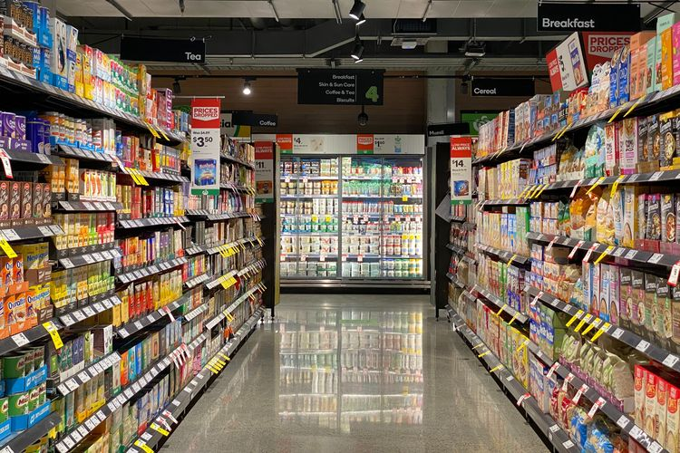
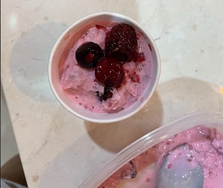
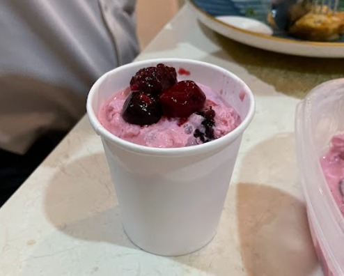
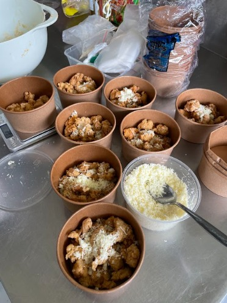

|
When you visit a supermarket you’ll find lots of snacks and drinks displayed on the shelves.
Nowadays, snacks and drinks are attractively packaged, convincing customers to buy them. However, if you look
at them closely, many of these items contain high levels of sugar, sodium, and often artificial food coloring.
Those ingredients are unhealthy, especially for young children. That’s why we decided to produce and sell some
healthy and nutritious food with higher quality for the Santa Ursula Jakarta Middle School Community. |
 |
|   |
Fresh cow milk was the main ingredient for both yogurt and cheese. We began by heating the
milk to a certain temperature. When we made yogurt, 2 tablespoons of plain yogurt should be added and mixed
with milk until they were blended. Then the mixture was poured into a jar and closed tightly and it was
chilled in the refrigerator for less than a day. As for the cheese, vinegar was added into the milk to
separate the solid particles of the milk. After that, we can separate them by draining it using a cheesecloth
to take the potential cheese, then salt was added to give more flavor. We molded the cheese into whatever
shape we liked and covered it with aluminum foil, then chilled it in the refrigerator for at least 1 day. |
|
Next, for our chicken popcorn, lots of spices had to be used to make the dish tasty and
flavorful. This actually took quite a while to make, thanks to the marination process that had to be done the
night before cooking the chicken. The cubed chicken was marinated with egg and soy for a night. Then, once the
chicken was ready, we could mix the ingredients for the crispy skin. After that, we could start to coat the
chicken with an egg mixture first before coating it with a layer of the spices. We have to dip it in the egg
mixture first so that all the spices can form a thick layer around the chicken. Our trial was very successful,
so when the time came to make the chicken at school, we had no trouble at all. |
 |
Bazar adalah kegiatan yang dilakukan secara berkala untuk tujuan tertentu. Bazar adalah toko atau pekan raya yang menjual berbagai macam barang. Bazar juga merupakan salah satu sarana untuk melatih dan juga mempersiapkan jiwa siswi-siswi untuk menjadi entrepreneur. Proyek bazar ini juga dapat meningkatkan pemahaman siswi agar lebih menghargai uang. Dari bazar ini siswi dapat belajar bahwa demi mendapatkan sebuah keuntungan atau untuk bertahan hidup tidak akan semudah yang biasa dirasakan dan membutuhkan perjuangan yang lebih. Kegiatan ini juga dilakukan agar siswi-siswi bisa belajar mempraktikkan materi yang dipelajari secara langsung. Kegiatan ini mengingatkan kita semua betapa pentingnya para siswi untuk bisa menerapkan materi yang dipelajari. Dengan demikian, materi yang dipelajari siswi dapat lebih terlihat kegunaannya di kehidupan nyata, agar siswi tidak sekedar memahami teorinya saja. Selain itu, siswi-siswi bisa lebih belajar dan merasakan langsung risiko untung dan rugi. Dimana untuk penulis, penulis melakukan bazar ini dengan tujuan untuk mengasah kemampuan penulis dalam bidang kewirausahaan.


Dalam laporan ini, penulis akan membahas proses dan pengaruh proyek bazar yang diadakan oleh siswi-siswi kelas IX SMP Santa Ursula Jakarta selama tahun ajaran 2023-2024 terhadap pengembangan diri penulis. Menurut penulis, proyek bazar dapat melatih kekreatifitas siswa dan siswi. Hal ini dikarenakan dalam bazar, siswi perlu mengeluarkan ide-ide untuk barang apa saja yang akan dijual. Selain itu, juga cara siswi mempromosikan produk-produk tersebut agar orang-orang tertarik untuk membeli produk-produk yang dijual. Siswi harus memiliki sikap observer dan dapat memerhatikan kebutuhan dan produk yang daya jualnya tinggi di komunitas Sekolah Santa Ursula Jakarta. Dari kegiatan ini siswa-siswi juga bisa lebih mengenal dan mengetahui produk apa saja yang menjadi kesukaan orang-orang, terutama di komunitas Sekolah Santa Ursula Jakarta.
Kewirausahaan adalah suatu usaha atau proses menciptakan sesuatu agar bisa memiliki nilai yang lebih tinggi. Kewirausahaan merupakan keterampilan yang sangat bermanfaat bagi siswi, karena dapat mengasah dan melatih kemampuan siswi dalam berwirausaha dan bekerja. Kewirausahaan dapat menjadi salah satu kegiatan ekonomi. Seperti yang kita ketahui, manusia memiliki kebutuhan hidup yang harus dipenuhi. Cara memenuhi kebutuhan hidup tersebut adalah dengan cara melakukan kegiatan ekonomi. Siswi harus bisa belajar cara berwirausaha sejak dini agar siap dalam menghadapi tantangan di masa mendatang yang terkait dengan ekonomi. Kegiatan ini melatih siswi untuk dapat bekerja dan memenuhi kebutuhan hidupnya di masa depan. Selain itu, kegiatan kewirausahaan ini bisa bermanfaat kedepannya bagi orang lain. Hal ini dikarenakan bahwa jika seseorang membuka sebuah kewirausahaan ini bisa membuka lapangan kerja baru bagi masyarakat sehingga tentunya mengurangi pengangguran. Kegiatan bazar ini menyadarkan siswi bahwa melakukan kegiatan ekonomi itu sangat penting. Siswi harus siap untuk menyesuaikan diri dengan kehidupan nyata di luar sekolah. Karena tidak selamanya kebutuhan siswi akan terpenuhi. Siswi harus terbiasa memenuhi kebutuhan hidup sendiri.

Tujuan dari pelaksanaan bazar ini adalah sebagai berikut:

Manfaat yang diperoleh dari penelitian ini sebagai berikut.
|
1. Manfaat Bagi Siswi
Hasil penelitian ini diharapkan bisa dimanfaatkan siswi SMP Santa Ursula Jakarta sebagai panduan untuk proses proyek IL bazaar pada kelas IX. Bazar ini dapat bermanfaat untuk menambah kemampuan siswi terutama dalam bidang kewirausahaan. |
2. Manfaat Bagi Sekolah
Hasil penelitian ini diharapkan bisa membantu sekolah supaya sekolah dapat berkembang lebih lanjut dan supaya sekolah ini dapat menghasilkan lulusan yang berprestasi. Kegiatan bazar juga diharapkan dapat bermanfaat bagi sekolah dalam memantau kemampuan siswi-siswinya. |
3. Manfaat Bagi Pihak Lain
Hasil penelitian diharapkan bisa dimanfaatkan pihak lain sebagai bacaan tentang pentingnya kemampuan seseorang dalam bidang kewirausahaan. |
4. Manfaat Bagi Kami
Hasil penelitian ini diharapkan bisa dimanfaatkan peneliti dalam memenuhi tugas akhir proyek IL kelas IX dengan nilai yang baik, dan bisa menjadi pembelajaran bagi peneliti untuk kedepannya. Kegiatan bazar juga dapat bermanfaat bagi peneliti untuk mendapatkan informasi untuk tugas akhir IL kelas IX ini. Selain itu, bazar juga dapat bermanfaat bagi masa depan peneliti karena menambah pengetahuan peneliti. |